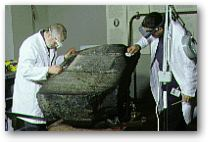
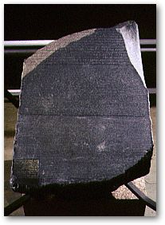

Cleaning
The Rosetta Stone
The Rosetta Stone was discovered in 1799 and deciphered in 1824. The stone was acquired by the museum in 1802 and has been on display since then. In October 1998, it looked like a black stone with a white inscription.
Analysis of the stone has shown that it is a granite-like rock and not a basalt as it has previously been described. Samples of the surface soiling were analysed to ensure that no ancient material would be removed during cleaning and tests to determine the best cleaning methods were undertaken. Waxes, oils, printer's ink and white paint were identified. The waxes and oils were mostly from handling grease, but some of the wax may have been applied as a protective coating at some stage in the stone's history. Soon after its discovery, paper copies of the inscription were made by inking the surface of the stone and using it like a printing block. This is thought to be the source of the ink. The white paint in the inscription was applied around 1980 to make it more legible.
All of these contaminants, including the white paint, were removed to reveal a grey stone with a natural sparkle and a broad pinkish vein at the top. White painted inscriptions, contemporary with its acquisition, record on the left side 'Captured in Egypt by the British Army in 1801' and on the right 'Presented by King George III'. This evidence of the stone's modern history was not removed. For comparative purposes, a small area of the surface has been left uncleaned at the bottom left hand corner.
An improved
system of display will prevent visitors touching the stone and different
lighting will make the inscription legible without the use of white paint.
R. Parkinson, The Rosetta Stone (British Museum Objects in Focus; London: British Museum Press 2005)
| Blackened lead white pigment |